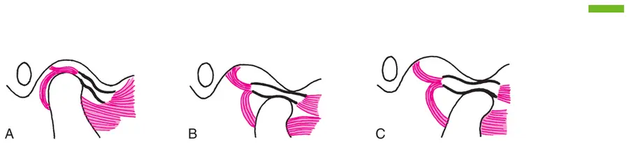
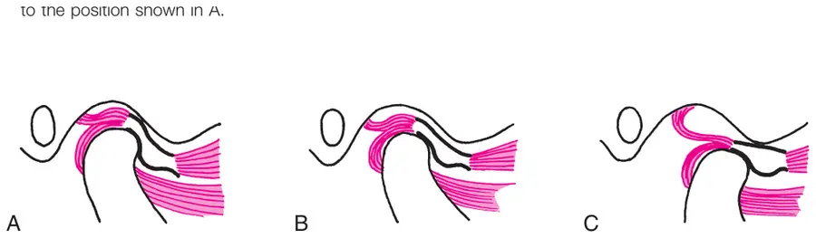

نسخه استخراجشده؛ ترجمه یا تأیید علمی انجام نشده است. وضعیت: captured
DJD چه چیزهایی را دربر میگیرد؟ گسترهای از یافتههای آناتومیک، شامل دیسکهای نامنظم، سوراخشده، یا شدیداً آسیبدیده، همراه با ناهنجاریهای سطح مفصلی مانند صاف شدن سطح مفصلی، فرسایش، یا تشکیل استئوفیت.

و مکانیسمهایش: مکانیسمهای بیماریهای دژنراتیو TMJ بهروشنی درک نشدهاند ولی چندعاملی پنداشته میشوند. و مفاهیم امروزی DJD سه مکانیسم ممکن آسیب را دربر میگیرند:
۱ — ترومای مکانیکی مستقیم: میتواند از ترومای معنادار و آشکار به مفصل، یا میکروترومای بسیار کمآشکارتر مانند بارگذاری مکانیکی بیشازحد ناشی شود.
۲ — آسیب هیپوکسی-ریپرفیوژن: این نظریه پیشنهاد میکند که فشار هیدرواستاتیک بیشازحد داخلکپسولی درون TMJ میتواند از فشار پرفیوژن رگ خونی فراتر رود و به هیپوکسی بینجامد.
و شاهدش: این نوع افزایش فشار داخلکپسولی بهروشنی در بیماران حین کلنچینگ و براکسینگ نشان داده شده است.
و بخش خطرناکش: وقتی فشار درون مفصل کم میشود و پرفیوژن دوباره برقرار میگردد، رادیکالهای آزاد تشکیل میشوند — و این رادیکالها میتوانند با سایر مواد در مفصل، مانند هموگلوبین، برهمکنش کنند و آسیب بیشتری تولید نمایند.
۳ — التهاب نوروژنیک: وقتی رخ میدهد که گسترهای از مواد از نورونهای محیطی آزاد شوند.
و فرضیهاش: در موارد جابهجایی دیسک، فشرده شدن یا کشیده شدن بافت رترودیسکال غنی از عصب میتواند به آزاد شدن نوروپپتیدهای پیشالتهابی بینجامد.
و زنجیرهاش: آزاد شدن سایتوکاینها به آزاد شدن و فعال شدن گسترهای از مواد میانجامد، از جمله پروستاگلاندینها، لکوترینها، و آنزیمهای تجزیهکنندهی ماتریکس.
و یک نکتهی امیدبخش: این ترکیبات نهتنها در فرایند بیماری نقش دارند، بلکه میتوانند بهعنوان نشانگرهای زیستی هم عمل کنند که به تشخیص و سرانجام درمان شرایط پاتولوژیک مفصل کمک نمایند.
و یک هشدار: پیشرفت شرایط پاتولوژیک مفصل را نمیتوان پیشبینی کرد.
و رابطهی DJD با مرحلهبندی: تشخیص DJD یا استئوآرتریت اصطلاح گستردهای است که هر دو مرحلهی چهار و پنج اختلال داخلی ویلکز را دربر میگیرد.
و یافتههای بالینی و رادیوگرافیک: بیماران DJD مکرراً درد همراه با کلیک یا کرپیتاسیون درست روی TMJ را تجربه میکنند؛ معمولاً محدودیت آشکار باز شدن حاضر است و علائم معمولاً با عملکرد بیشتر میشوند.
و رادیوگرافی: یافتهها متغیرند ولی عموماً کاهش فضای مفصلی، فرسایش سطوح، استئوفیت، و صاف شدن سر کندیل را نشان میدهند؛ این یافتهها در رادیوگرافی پانورامیک و سیتی دیده میشوند.
و در آرتریت روماتوئید — یک پیامد اکلوزالی مهم: تخریب دوطرفهی کندیلها میتواند به از دست رفتن ارتفاع کندیل-راموس بینجامد، که تماس زودرس دندانهای خلفی و مالاکلوژن بایت باز قدامی ایجاد میکند.
نخست یک تمایز که مکرراً اشتباه میشود:

و علتش: دررفتگی TMJ مکرراً رخ میدهد و از بیشتحرکی مندیبل ناشی میشود. و میتواند یکطرفه یا دوطرفه باشد، و خودبهخود پس از باز کردن گشاد دهان — مانند خمیازه، غذا خوردن، یا حین یک عمل دندانی — رخ دهد.
و چه زمانی دردناک میشود؟ دررفتگی کندیل مندیبولار که بیش از چند ثانیه بپاید، عموماً دردناک میگردد و اغلب با اسپاسم شدید عضلانی همراه است.
و درمان — یک اصل و یک مانور: دررفتگیها باید در اسرع وقت جا انداخته شوند. و این جااندازی با اعمال فشار رو به پایین روی دندانهای خلفی و فشار رو به بالا روی چانه، همراه با جابهجایی خلفی مندیبل انجام میگیرد.
و اگر ساده نبود: معمولاً جااندازی دشوار نیست؛ ولی اسپاسم عضلانی میتواند مانع جااندازی ساده شود، بهویژه وقتی دررفتگی نتواند بیدرنگ جا انداخته شود. در این موارد بیحسی عصب اوریکولوتمپورال و عضلات جونده میتواند لازم شود، و سداسیون برای کاهش اضطراب بیمار و فراهم کردن شل شدن عضلانی هم میتواند نیاز باشد.
و پس از جااندازی: بیمار باید آموزش ببیند که باز کردن مندیبل را به مدت ۲ تا ۴ هفته محدود کند. و گرمای مرطوب و NSAIDها هم در کنترل درد و التهاب سودمندند.
آنکیلوز داخلکپسولی: یا جوش خوردن مفصل، به کاهش باز شدن مندیبل میانجامد که از کاهش نسبی عملکرد تا بیحرکتی کامل فک را دربر میگیرد.
و از چه ناشی میشود؟ از جوش خوردن مجموعهی کندیل، دیسک و حفره، در نتیجهی تشکیل بافت فیبروزی، جوش استخوانی، یا ترکیبی از این دو.
و شایعترین علتش: ماکروترما، که مکرراً با شکستگیهای کندیل همراه است. و سایر علل: درمان جراحی پیشین که به اسکار انجامیده، و در موارد نادر، عفونتها.
و ارزیابی: محدودیت شدید باز شدن حداکثری، انحراف به سمت مبتلا، و کاهش حرکات جانبی به سمت مقابل را آشکار میکند.
و یک نکتهی افتراقی مفید: اگر آنکیلوز عمدتاً نتیجهی بافت فیبروزی باشد، تحرک فک بیشتر از حالتی خواهد بود که آنکیلوز نتیجهی جوش استخوانی است.
آنکیلوز خارجکپسولی: معمولاً زائدهی کرونوئید و عضلهی تمپورالیس را درگیر میکند. و علل شایعش: بزرگ شدن یا هایپرپلازی زائدهی کرونوئید، و تروما به ناحیهی قوس زیگوماتیک؛ عفونت پیرامون عضلهی تمپورالیس هم میتواند آن را تولید کند.
و تفکیکش از نوع داخلکپسولی: بیماران در آغاز محدودیت باز شدن و انحراف به سمت مبتلا دارند؛ ولی در این موارد محدودیت کامل باز شدن نادر است، و حرکات جانبی و پیشبردی محدود معمولاً قابل انجاماند — که نشان میدهد آنکیلوز داخلکپسولی وجود ندارد.
و رادیوگرافی: پانورامیک عموماً بلند شدن زائدهی کرونوئید را نشان میدهد؛ رادیوگرافی سابمنتال ورتکس یا CBCT هم میتوانند سودمند باشند.
و حالا یک یافتهی مهم و امیدبخش — سازگاری خودبهخودی: بیشتر بیماران با MPD و اختلالات داخلی، بدون هیچ نوع درمان بلندمدت یا تهاجمی خوب میشوند.
و حتی در قفل بسته: در جابهجایی قدامی دیسک بدون جااندازی — یعنی قفل بسته — بیشتر بیماران پیشرفت تدریجی افزایش باز شدن و کاهش ناراحتی را بدون درمان گسترده تجربه میکنند.
و چرا؟ این ظاهراً نتیجهی سازگاری فیزیولوژیک و آناتومیک بافت درون مفصل است؛ بهنظر میرسد در بسیاری از بیماران، بافت اتصال خلفی دچار سازگاری فیبروزی میشود و بهقدر کافی بهعنوان بافت بینابینی میان کندیل و حفره خدمت میکند. و این اغلب سازگاری سودودیسک نامیده میشود.
و اسپلینتها — سه گروه متمایز:
۱ — اسپلینت خودجاگذار (autorepositioning): که اسپلینت راهنمای قدامی، اسپلینت جاگذار فوقانی، یا اسپلینت عضلانی هم نامیده میشود.
۲ — اسپلینت جاگذار قدامی: چنان ساخته میشود که یک اثر رمپ قدامی، مندیبل را وادار به عملکرد در موقعیت پیشبرده کند.
۳ — دیپروگرامر عضلانی: اسپلینتهایی که دندانهای خلفی را دربر نمیگیرند. نشان داده شده که فعالیت عضلانی را کم میکنند، بهویژه در بیماران مشکوک به براکسیسم شبانه.
و دو هشدار مهم دربارهاش: